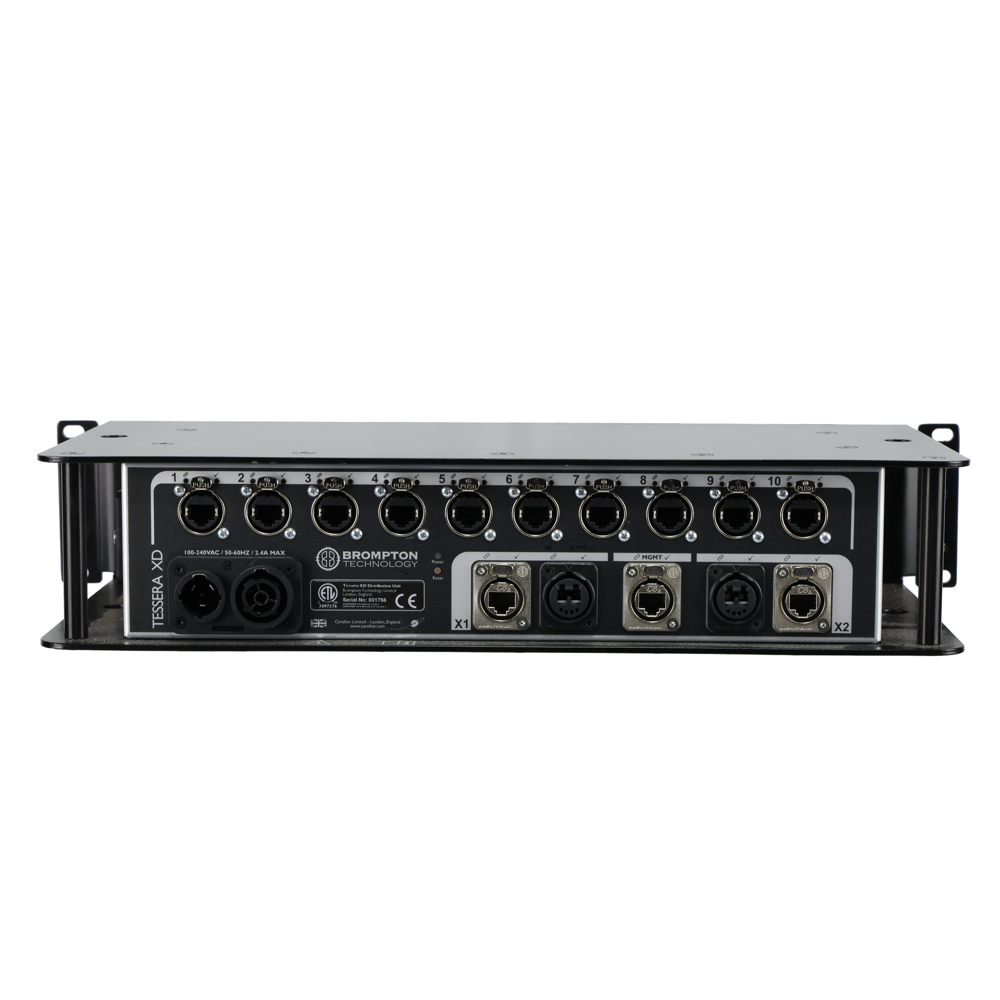

XDのどの型式？
ここで扱うのは10出力のTessera XDです。XD-S・XD-Tなど別型式とは出力構成を分けて確認します。
映像をつなぐ・整える ↗EQUIPMENT / 84
LEDデータの分配器
Tesseraの光・銅線経路を、LEDパネルへ分配する。
KEY SPECIFICATIONS
 画像を大きく見る ＋
画像を大きく見る ＋画像出典：製品取扱元の写真掲載ページ
01 / ROLE & FLOW
役割を表す説明図です。実際の配線・端子構成は案件に合わせて決めます。

画像を拡大 ↗型番、端子の役割、必要なケーブルを、送り元と受け側の両方で合わせます。写真だけで互換性や付属品を判断せず、実際の構成で確認します。
02 / BEFORE YOUR BRIEF
ここで扱うのは10出力のTessera XDです。XD-S・XD-Tなど別型式とは出力構成を分けて確認します。
複数台を直列につないでも、同じ番号の出力ポートは帯域を共有します。台数分の独立帯域が増えるわけではありません。
X1・X2や光・銅線を使った構成は、使用するモードと本番時の切替条件を合わせて試験します。
03 / CHOOSING THE RIGHT TOOL
Tessera系のLEDシステムで、操作席から画面近くまでの幹線と、パネルへ向かう配線を整理する構成に。パネル配置と各出力の負荷を合わせて設計します。
一般的なネットワークスイッチとして任意の映像機器へ使うものではありません。対応するTesseraプロセッサーとLED受信系統で使います。直列接続時は、各XDの同番号ポートが使う帯域を合算して計画します。
ファームウェアによって直列接続とプロセッサーの予備切替を併用できないため、構成を個別に確認します。通常時・予備系統・直列接続のどの構成を使うかを先に決め、光モジュールとケーブルの仕様、各ポートの割当て、画面の画素配置を確認します。本番前には、すべての画面と予備経路を実際に表示して試験します。掲載写真は外観確認用で、モジュール・光ケーブルなどの付属を示すものではありません。
参考資料：Brompton Tessera XD 公式データシート（2026年3月） ↗（2026年11月5日照合）
日程・台数、TesseraプロセッサーとLED型式、画面画素数、幹線の距離と光モジュール、各ポートの割当て、直列・予備経路の構成、配線・本番操作の担当範囲をお聞かせください。本体・周辺機材・搬入出・設営・本番操作・撤去を分けて、必要な範囲を整理します。セットの付属品や人員が自動で含まれる表示ではありません。
04 / RELATED EQUIPMENT
使用するファームウェア、光モジュール、パネルの受信系統まで含めて構成を確認します。